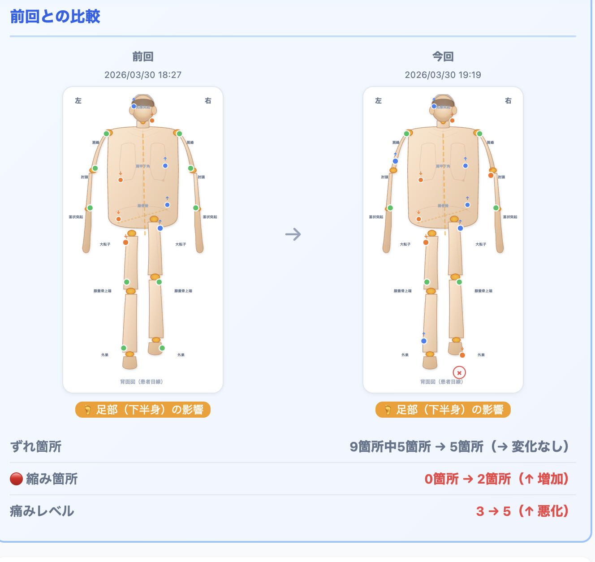
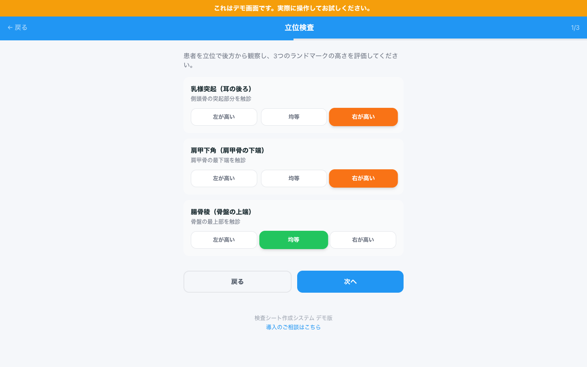
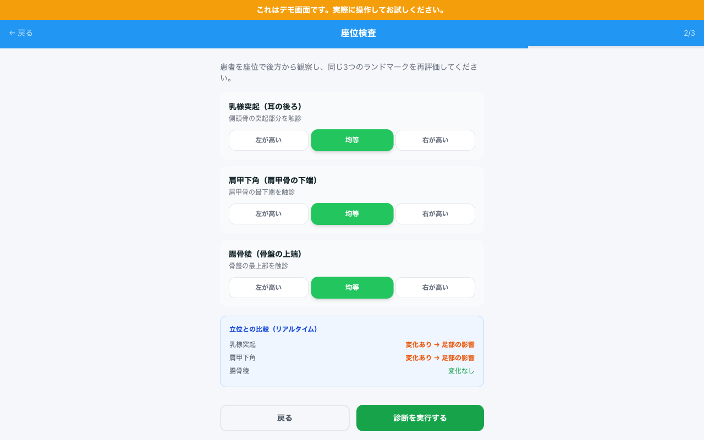
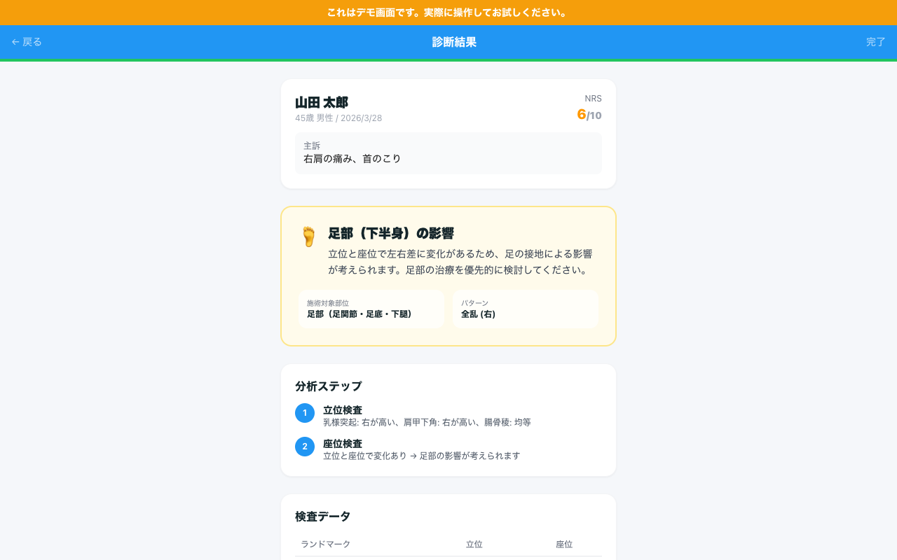
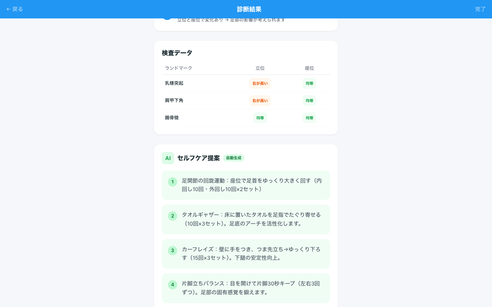
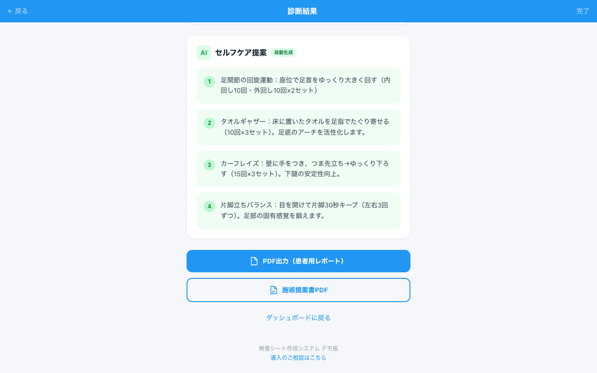

検査で歪みを可視化 → 患者が自分の体を理解 → 納得してリピート。
このサイクルを回し続けた結果が、月商424万円。
開発者自身が現場で使い続けて結果を出しているカラダマップです。
施術前後の検査データを自動で比較。人体図と数値の両方で変化を表示します。
患者が自分の目で改善を確認できるから、信頼が生まれ、次の来院につながります。
大口神経整体院 院長 / 開発者
大口 陽平
重症専門の一人治療院として、この検査を武器に月商424万円を達成しました。
現在は週4日稼働で月200万円を安定して出しています。
神経整体・構造医学・東洋医学・仙腸関節療法など、さまざまな治療法を学んできました。
その中で感じたのは、治療家のほとんどは「感覚系」で治療しているということ。
感覚系の治療で良くなっても、患者さんからすると「なぜ良くなったのか」がわからない。
患者さんに検査結果を見せると、大きな反応がありました。家で家族に「こういう風に歪んでたよ」と見せてくれて、それがきっかけで紹介にもつながりました。
一方、周りの治療家に話を聞くと、こんな声が多かった。
今の体がどうなっているのか、それがどう変化して症状が変わったのか。状態と変化を「可視化」して伝えたい。
開発者自身が現役の治療家だからこそ作れた、現場発の可視化アプリです。
足元影響、上半身影響、全体偏位、体幹回旋を自動で特定。
結果は人体図イラストで表示。
患者にそのまま見せるだけで、状態が一目で伝わります。
シセイカルテ、Sportip Proなど。カメラ撮影型で施術者の検査手技は記録できない。
RIPCLE、ほねぺんなど。汎用カルテで検査に特化した機能がない。
データ蓄積・比較・共有が不可能。過去データとの比較は手作業。
立位、座位、上半身の順で9箇所をチェック。歪みの原因を自動で判定します。
歪みの状態を人体図イラストで可視化。患者への説明がその場で完結します。
前回と今回の検査結果を人体図と数値で並べて比較。変化が一目瞭然です。
来院ごとの改善推移をグラフで表示。長期的な変化を患者と共有できます。
患者用レポートと施術者用レポートをPDF出力。紙で渡すことも可能です。
患者カルテはクラウドに自動保存。iPad、スマホ、PCどこからでもアクセスできます。
氏名・年齢・主訴
NRSで痛み数値化
乳様突起・肩甲下角
腸骨稜の左右差
足部の影響を
リアルタイム判定
肩峰・肘頭
茎状突起の左右差
原因部位を自動特定
PDF＋セルフケア出力
9箇所のチェックを画面に沿って入力するだけ。手書きの記録も不要になります。
ビフォーアフターで変化を見せることで、患者の継続意欲が高まります。
「ちゃんと検査してくれる院」という信頼感。口コミにもつながります。






| サービス | 月額 | できること |
|---|---|---|
| シセイカルテ（AI姿勢分析） | 推定10,000〜30,000円 | カメラ撮影型。施術者の検査手技は記録不可 |
| Sportip Pro（AI姿勢解析） | 推定15,000〜30,000円 | 姿勢解析+予約+カルテ統合。高機能だが高額 |
| RIPCLE（電子カルテ） | 8,800円〜 | 汎用カルテ。検査特化の機能なし |
| 紙の検査シート | 0円 | データ蓄積・比較・共有が不可能 |
| 検査シート作成アプリ | 3,980円（モニター） | 段階的原因特定 + PDF出力 + カルテ + NRS記録 + クラウド |
先着5名限定 / 2026年4月7日(月)締切
モニター終了後は9,800円/月に値上げ予定。今なら月5,820円お得です。
Stripeによる安全な決済処理。
クレジットカード情報は当社サーバーに保存されません。
可視化でリピート率を上げ、月商424万円を出したカラダマップ。モニター枠は先着5名限定。
LINEで申し込む モニター限定 3,980円/月（通常9,800円）申し込み締切：2026年4月7日(月) / 通常価格9,800円に値上げ予定